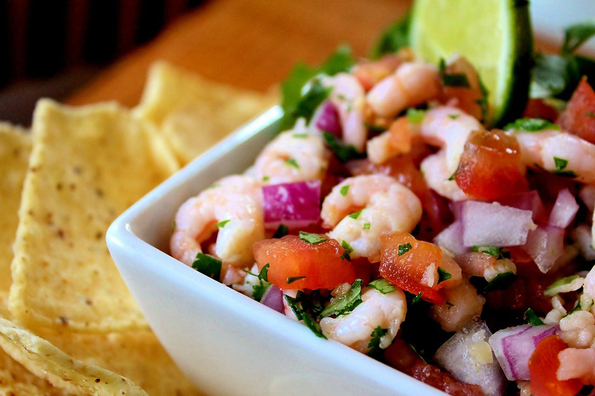

Shrimp Salsa

This is an awesomely simple, light, and refreshing salsa that goes great with tortilla chips.
Ingredients
- ½ pound salad shrimp
- 2 roma (plum) tomatoes, diced
- ½ red onion, diced
- ¼ cup minced cilantro
- ¼ cup fresh lime juice
- 1 teaspoon salt
- 1 teaspoon freshly ground black pepper
- 1 clove garlic, minced
Steps
- Stir the salad shrimp, tomatoes, onion, cilantro, lime juice, salt, pepper, and garlic together in a large glass bowl.
- Cover with plastic wrap and refrigerate until the flavors combine, at least 1 hour. Serve cold.